Git for Scientists
Commit, branch, pull request, and how this workshop is taught
Global Health Engineering, ETH Zurich
20 November 2026
Find your seat
Your username is on a table
Your setup is finished. Sit there, and keep the seat beside you free.
Your username is at the door
Take your card and sit beside someone whose card is on a table.
No card with your username
Take a blank card, write your name on it and sit beside someone whose card is on a table.
You work together at one laptop with a finished setup, in pairs or in groups of three.
If you like, add your name to your card and introduce yourself to your neighbour.
Welcome
Lars Schöbitz
- Data steward at Global Health Engineering, ETH Zurich
- RStudio certified instructor since 2020
- I teach people who have never written code or used Git
Two seats today
Learner, until 10:30
You make a commit of your own and watch a file travel into a shared repository.
Educator, from 10:40
You look at how this workshop is built and taught, and you give feedback on it.
From now on, watch how I teach. After the break you write it down.
Who is in the room
Who is in the room: Git
How much have you used Git? Your answers in the survey (n = 27).
7 never
7 now and then
4 regularly
9 extensively
Half of you are new to Git or use it now and then.
Who is in the room: roles
Your role, from the survey (n = 27).
10 data stewards
5 researchers
2 librarians
10 other roles
16 of you teach Git or plan to. That is why the second half is about teaching.
What you want to take away
Your open answers, in groups (n = 27). Four answers fall outside these groups.
9 teach Git better, to mixed groups
8 a solid foundation of my own
3 support researchers who use Git
3 Git and AI tools
Git and AI tools
Three of you asked for it:
- When to use an AI assistant, and when not
- Testing and collaboration on GitHub when an agent writes the code
- How to declare the use of AI tools in research
The foundation we learn in the full course (two sessions of 2 hours) prepares you for our Agents for Scientists workshop, where we invite an agent, such as Claude Code, to work with us.
How we work today
How we work
My turn I show something on my screen. You watch and type nothing.
Our turn We do the same step at the same time, I on my screen, you on yours.
Your turn You work on a task, with your neighbour. I help where it sticks.
Things may go wrong here. Everything we do today can be undone.
Today
| Time | What |
|---|---|
| 09:45 | Git for Scientists, session 1, as I teach it |
| What is a commit? Your commits, then a commit of your own | |
| 10:15 | Branch and pull request. I show it in the shared repository |
| 10:30 | Break |
| 10:40 | How it is built and taught |
| Your feedback, how I teach, what motivates learners | |
| 11:25 | An offer, and your answer as a commit |
One board for the room
Your turn 2 minutes
- Open the workshop website: https://gitforsci-rdc.github.io/website/
- Click Workshop board in the top bar. No account, no name.
- In the frame First note, add one note: one thing from the conference so far that stays with you.
An AI session (Claude) on my laptop reads your notes and groups them. No names, nothing personal on a note.
Git for Scientists, session 1
What is a commit?
A commit is a saved state of your files, with four pieces of information:
- Who made it: a name and an email address
- When: date and time
- What changed: line by line
- Why: the message you write with it
Traces in a real repository
My turn The commits of the workshop website:
- 9 November: pre-work steps 1 and 2
- 15 November, a Sunday, 22:00: steps 3 to 5
- 17 November: step 6
- 19 November, the day before: these slides, 19 commits
At what times of day did Lars prepare this material?
Git forgets nothing. 34 commits until last night: 19 of them yesterday, 7 at 22:00 or later.
One repository, several places

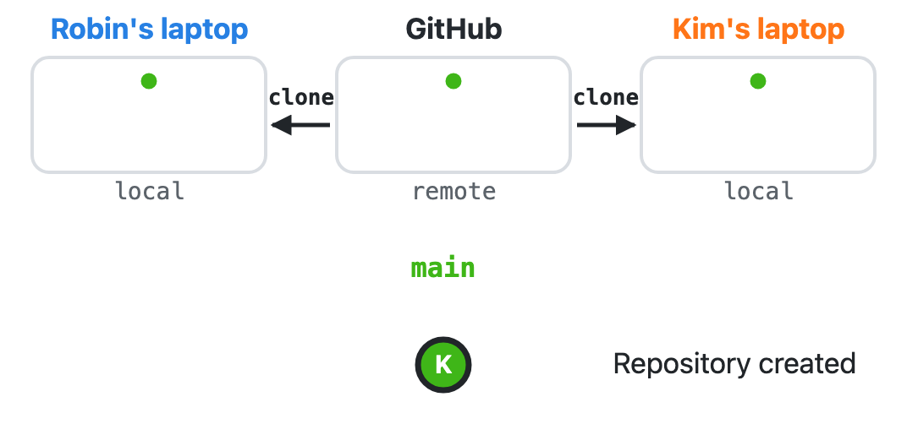
Pictures: Lars Schöbitz, CC BY 4.0. K is Kim, R is Robin. Dashed: only on the laptop.
Your commits in GitHub Desktop
Our turn
- Open GitHub Desktop.
- Choose your repository
teaching-your-usernameat the top left. - Click the tab History.
Your commits from the pre-work: who, when, what, why.
Three commits? Show your neighbour.
Your commits on GitHub
Your turn 3 minutes
- In GitHub Desktop: menu Repository, View on GitHub.
- Click the clock with the number, for example 3 Commits.
- Show your neighbour one commit: who, when, what, why.
Your laptop and GitHub hold the same commits.
A commit, step by step
My turn Watch, type nothing.
- Menu Repository, Open in Sublime Text
- One line more in
rainbow-train.md, save - Tab Changes: the line shows in green
- A message, then Commit to main
- Push origin
A commit of your own
Your turn 5 minutes
In GitHub Desktop: menu Repository, Open in Sublime Text.
In
your-username.md, add one line at the end and save:- What I want to take away today:Tab Changes: your line shows in green.
Write a message, click Commit to main.
Click Push origin.
On GitHub: one commit more. Then a sticky note on the lid.
Questions so far
One or two now, out loud.
Everything else: a note under Parked questions.
The same in the terminal
My turn
$ git status On branch main Your branch is up to date with 'origin/main'. nothing to commit, working tree clean $ git log --oneline 5d0c1e2 Add what I want to take away 3d0719b Describe this repository 0485b82 Add my teaching context c93273e Initial commit
The terminal shows the same repository as GitHub Desktop, as text.
A button is a command
| In GitHub Desktop | The command |
|---|---|
| History | git log |
| Changes | git status |
| Commit to main | git commit |
| Push origin | git push |
| Fetch origin, Pull origin | git pull |
What you learn today carries over to the tool you teach with.
Branch and pull request
A branch, then a pull request
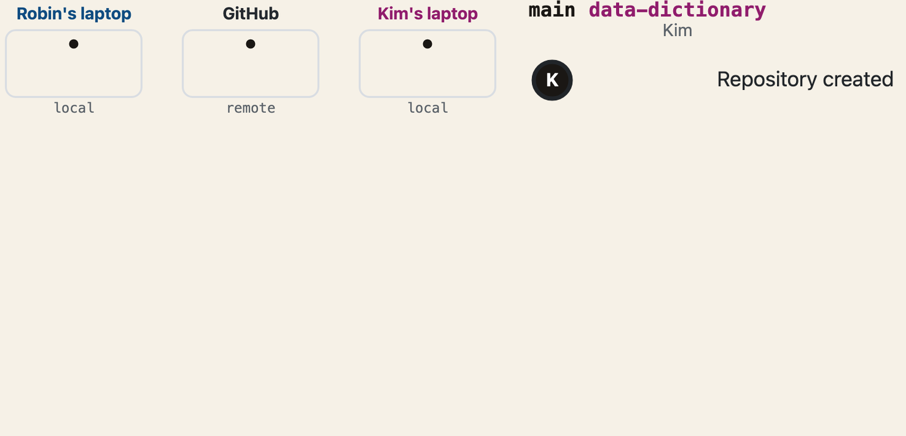
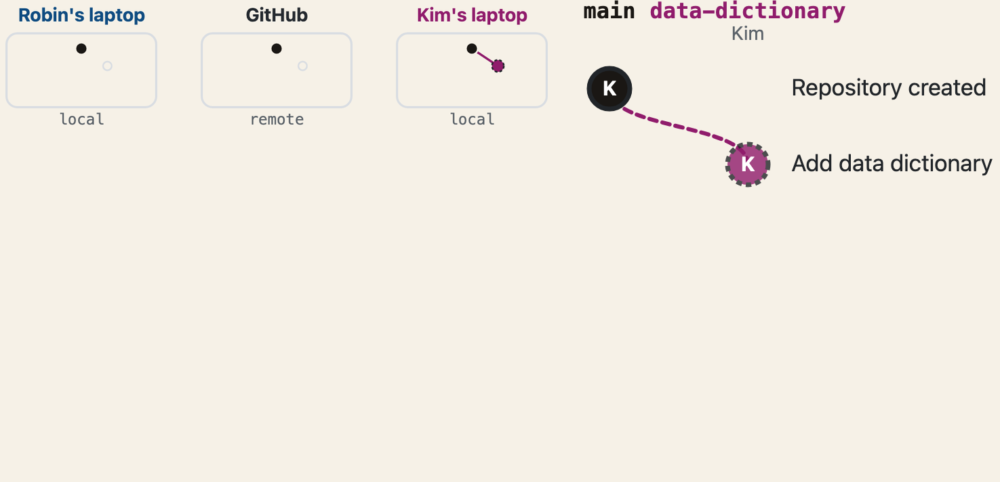
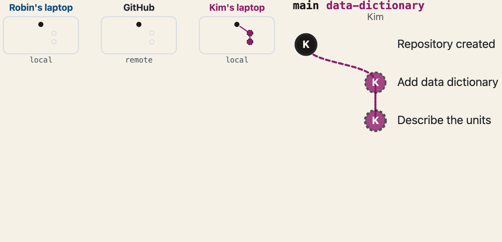
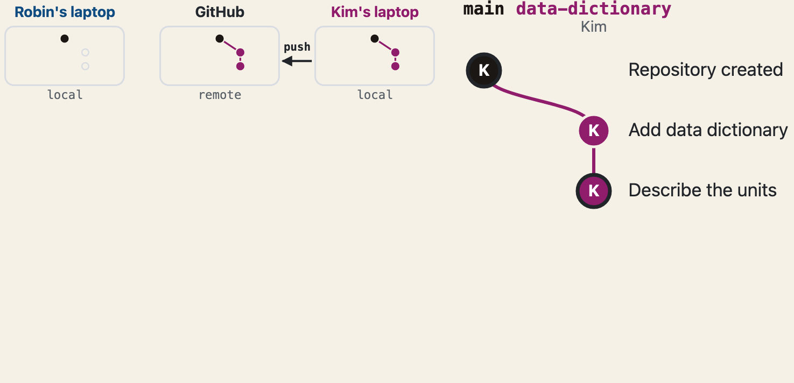
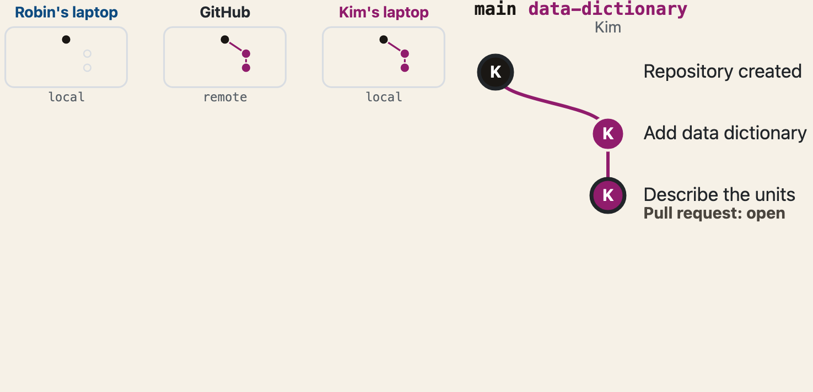
Robin works at the same time
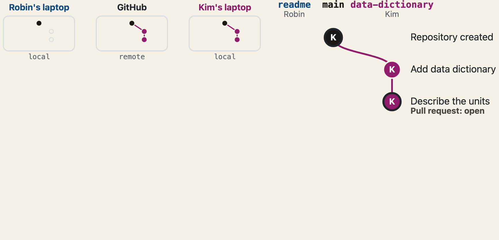
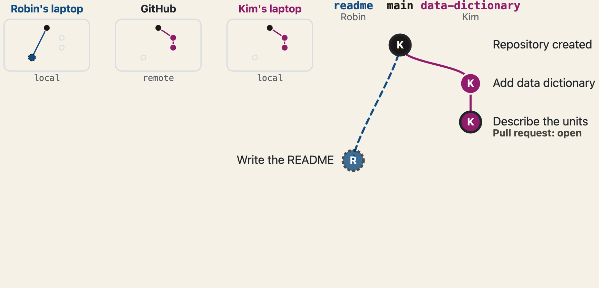
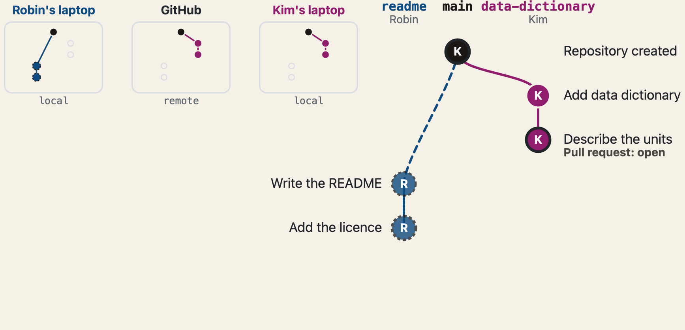
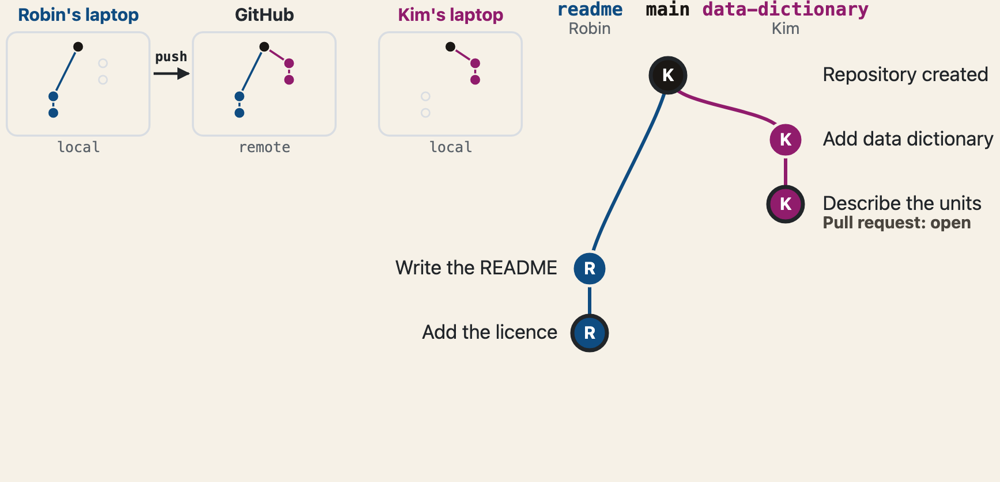
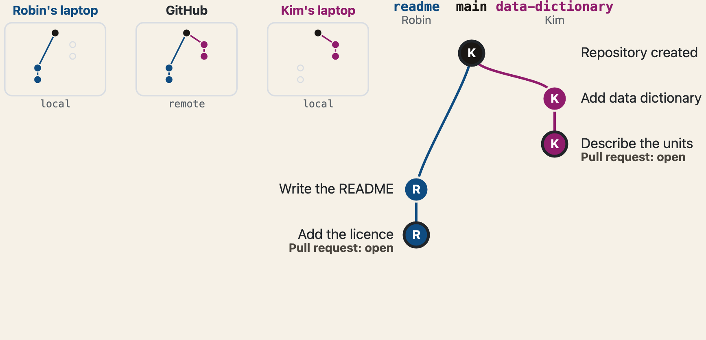
The shared repository
From yours into the shared one
Before
Your three lines are in your own repository, in your-username.md.
After
The same file is in the repository workshop, on a branch of your own. A pull request asks to take it into main.
You copy the file, not the folder.
A file goes into the shared repository
My turn Lean back and watch. I work as rainbow-train, a participant like you.
- Open the repository
workshop, click Fetch origin - Create the branch
people-rainbow-train - Copy the file
rainbow-train.mdinto the folderpeople - Commit
- Publish the branch
- Open the pull request and request a reviewer
Review and merge
A second person reads
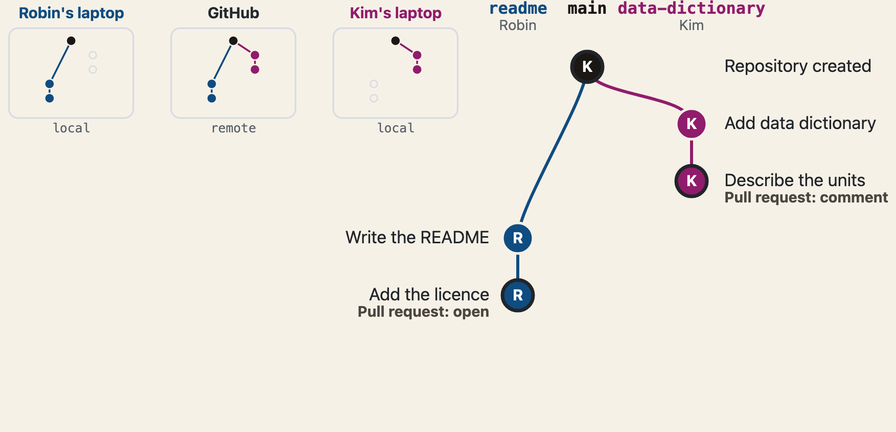
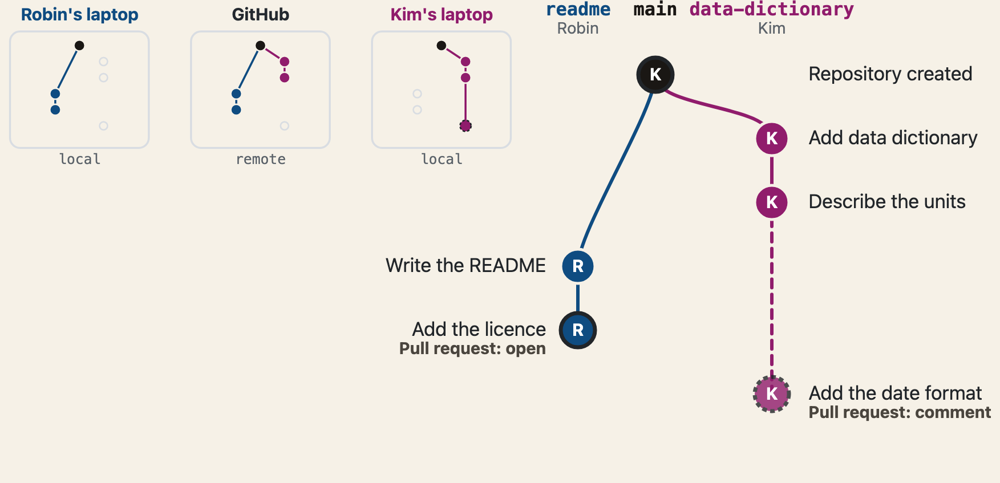
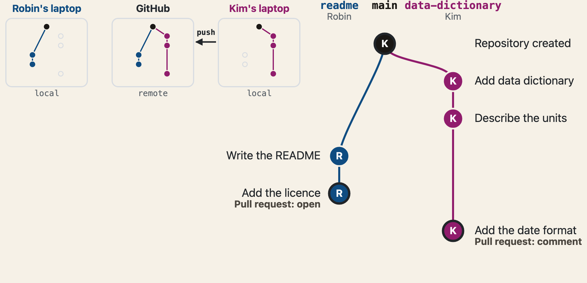
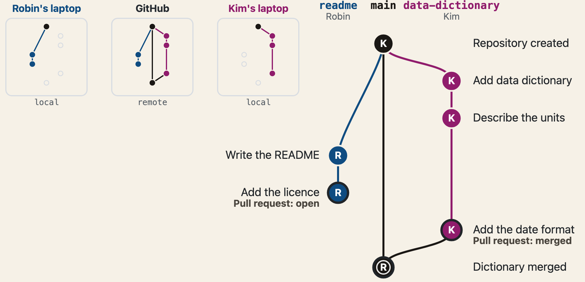
Your turn is at home
- Open the page Add your file on the workshop website.
- Bring your file into the repository
workshopwith a pull request. - Request larnsce as the reviewer.
I read every pull request that is open by Friday 4 December and write one question on it.
In the full course you do this in the room, right after the break. I walk the room and check in with each person. Online, I visit each break-out room.
Break
Until 10:40.
After the break: your feedback. One thing that went well, one that can be improved.
The educator seat
Feedback on my talk yesterday
| What went well | What can be improved | |
|---|---|---|
| Content | Every number came from public data | It stayed unclear what “embedded” means in practice |
| Presentation | One number per slide | No clear thread from the keynote to my talk |
| Interaction | One question to the room at the end | No time left for your questions |
| Preparation | Too many emails before this workshop |
Rubric: Greg Wilson, Teaching Tech Together, slides on feedback, CC BY 4.0. The row Preparation is my addition.
Activity 1: feedback on this workshop
Your turn The first hour, and the pre-work before it.
- Think, alone, 2 minutes: what went well, what can be improved?
- Pair, 3 minutes: tell your neighbour.
- Share, 5 minutes: on the board, frame Activity 1. One point per note, in the cell where it fits.
At least two notes under What can be improved.
How this workshop is built
| What you saw | What it is |
|---|---|
| The website with the six steps | A repository, built into a site on every merge |
| The invitation to the organisation | A script that reads the usernames from the survey |
| Your issue with five boxes | A script, one issue per person from one template |
| The comment after you ticked a box | A watcher that looks every 10 minutes |
| These slides | A text file in the repository of the website |
The next cohort gets a new copy. The content changes each time, for the people who come.
Your preparation, in counts
Friday 20 November, 07:00. Four emails from me.
27 answered the survey
26 joined the organisation
17 ticked all five boxes
17 made a commit from the laptop
On Tuesday at 15:00 the last two numbers were 7 and 2. Most of the work happens in the last hours, this time also because my instructions came late.
What you wrote
Your notes from activity 1, grouped. I switch to the second tab.
Read it with your neighbour: which point surprises you?
Then the floor is open, for what you wrote and for your questions.
How I teach
Six things I do
- Words I leave out: just easily quickly
- Design for the novice: every click is written down
- Know the learners, then design: survey first, content last
- A learner account: every demo ran as rainbow-train
- Type with the room, mistakes included
- Try out new things: today the board and its synthesis
Each one has a slide of its own at the end of this deck.
Motivation
What motivates adults to learn
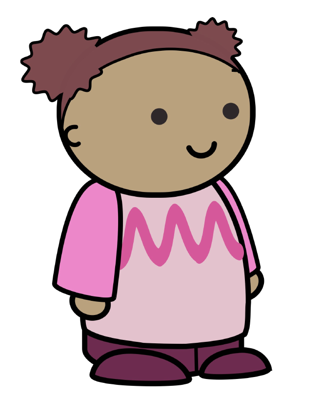
- Self-efficacy: I am in control of my own life.
- Utility: This will help me meet my goals.
- Community: People I know are learning this with me.
This morning: a repository of your own, your own three lines, a neighbour.
Figure and wording: Greg Wilson, Teaching Tech Together, slides on motivation, CC BY 4.0. Art from openclipart.org.
What takes motivation away
- Unpredictability: what I do does not seem to affect the outcome.
- Unfairness: the teacher plays favourites.
- Indifference: nobody cares. A question in an issue stays without an answer. The material was last touched two years ago.

Which of the three do your learners meet most often?
Figure and wording: Greg Wilson, Teaching Tech Together, slides on motivation, CC BY 4.0. Art from openclipart.org.
What stays
The full course
| Session 1, 2 hours | What you saw today, and your own pull request in the room |
| Two weeks between | A repository of your own, with me as reviewer. Practice in a game with quizzes. A glossary. |
| Session 2, 2 hours | Pairs review and merge. A merge conflict. Working together: tasks and projects, organisation and profile. |
Today you saw half of session 1.
Also on my list
- Peer instruction: people explain to each other and review each other’s work. It is the pull request in pairs that you did not do today.
- A place for questions, and the plain statement that a short workshop does not answer all of them.
- Online: a short visit to each break-out room.
Where this comes from
- Ten quick tips for teaching programming, Brown and Wilson, 2018
- Teaching Tech Together, Greg Wilson, free to read
- The Carpentries Instructor Training, open material and a certification
If you teach a technical tool, take an instructor training.
Would you teach this?
Your turn I would like to offer a workshop for people who teach Git: this design, its scripts and its material, for your own groups.
In your-username.md, add one line, then commit and push:
- Teach the teachers: yes / maybe / no. What I would need:
If you like, a second line:
- A moment in a course that took my motivation away:
Your answer commits you to nothing.
Thank you
Thank you
- Website and slides: gitforsci-rdc.github.io/website
- Licence CC BY 4.0. Take it, change it, teach with it.
- github.com/larnsce
- linkedin.com/in/larsschoebitz
- Newsletter, in German and English: buttondown.com/bitz
Cite as: Schöbitz, L. (2026). Git for Scientists (v1.0.0). Zenodo. https://doi.org/10.5281/zenodo.21703566
Funding and support: Swiss Reproducibility Network (SwissRN) local node at ETH Zurich & Data Stewardship Network at ETH Zurich, funded by the swissuniversities Open Science Programme & Global Health Engineering group at ETH Zurich
More on how I teach
Words I leave out
just easily quickly
- They say that a step costs nothing. A learner who is stuck on it hears: it is me.
- This morning: look for one of them on my slides or in the six steps of the pre-work. Found one? Park it on the board.
Design for the novice
- Assume that people know nothing about the tool.
- No gap between two steps: every click is written down, usually with screenshots. They are missing this time.
- Extra material for people with experience, marked as extra.
This morning: six pre-work steps with every click. “A button is a command” was the extra for those who use a terminal.
Know the learners, then design
- A survey before anything is written: 27 answers decided the software.
- A tracker shows who is where in the pre-work, without asking anyone.
- The content of today was written yesterday, from what I read in the pre-work.
Why GitHub Desktop?
11
RStudio
6
GitHub Desktop
4
Positron
5
no preference
I chose against the largest group. For novices, RStudio is too much on top of Git unless I teach R and Quarto alongside.
A learner account
- Every demo this morning ran as rainbow-train: a second account with the rights you have, on the screens you see.
- With my own account I am an owner. Buttons differ, warnings never show.
- The account found the rejected push with the real email address before you did.
Type with the room, mistakes included
- Participatory live coding: I type, you type, nothing is pasted.
- A demo in two passes where time allows: once without stopping, once slowly.
- A mistake on my screen is a moment to take apart together.
Try out new things
- I used a Miro board for the first time, because Claude can now set it up for me.
- The synthesis of your notes was a trial.
Inspire yourself and your learners with novelty, and learn new things along the way.
The same design, three days ago
Tuesday: the same design in German, online, for 16 people who do not write code.
- 13 pull requests in two hours
- Three clones on one laptop: “clone once” is now in Step 6
- A copied repository folder: today you copy one file
- The real email address in first commits: Step 4 now comes first
- Too many emails before the workshop